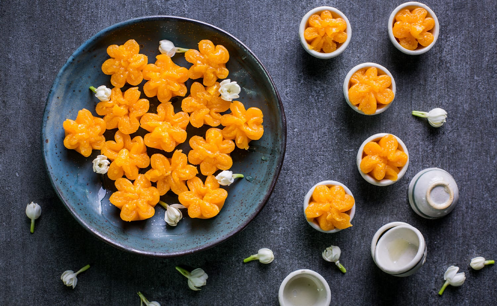
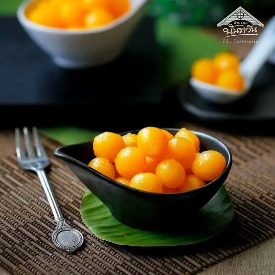
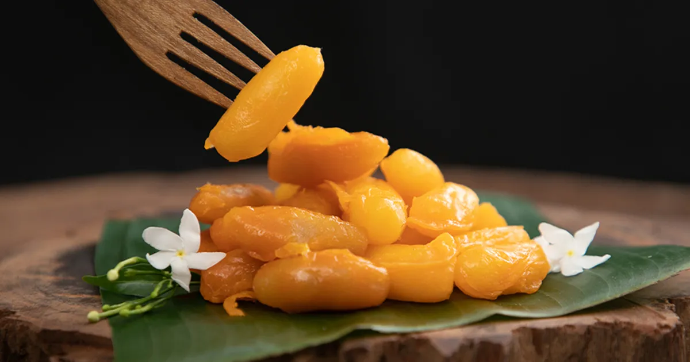
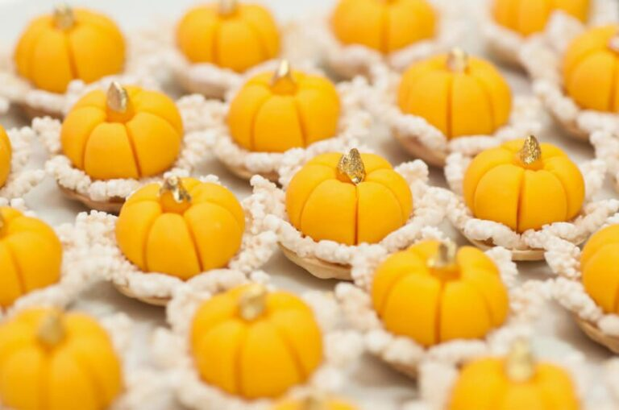
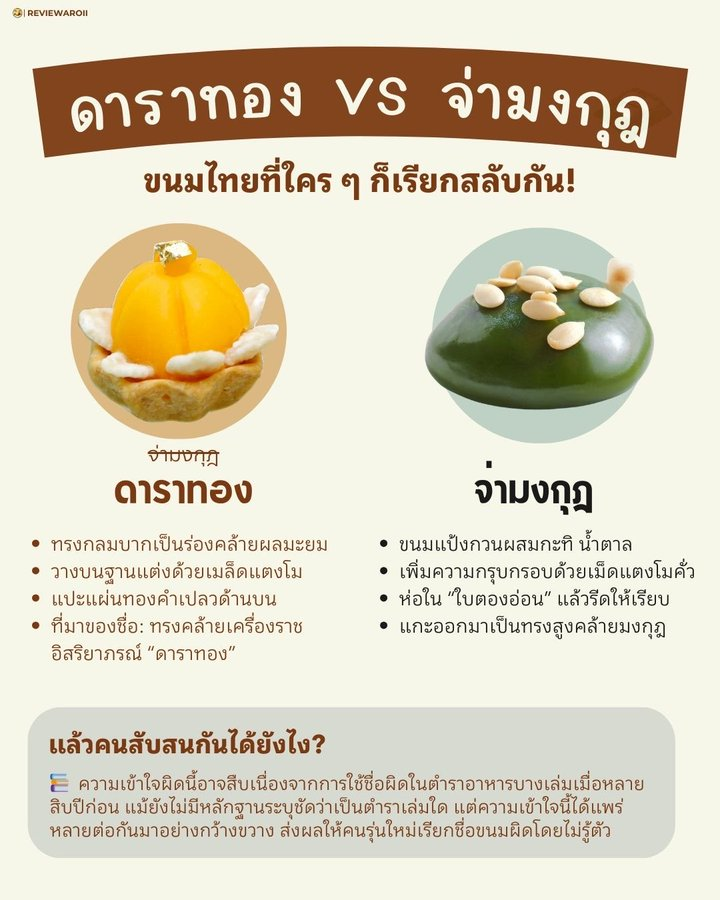
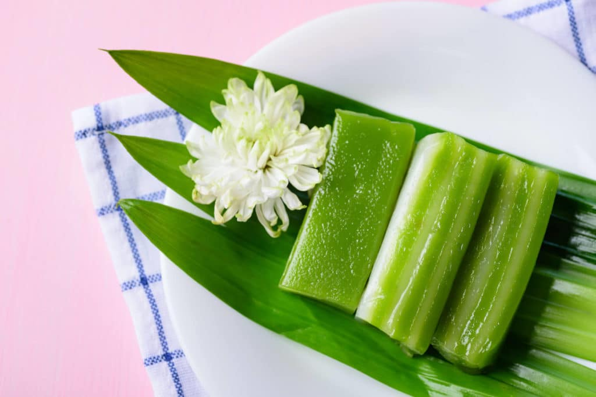
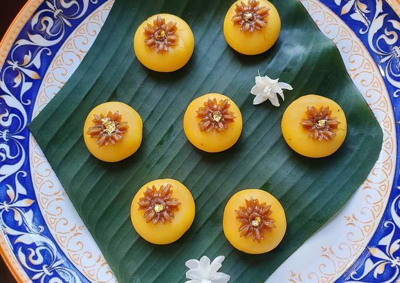

ความหมายของขนมมงคล
ทองหยิบ
คงปฏิเสธไม่ได้ว่าการได้ “หยิบ” ความร่ำรวยย่อมเป็นสิ่งที่คู่รักข้าวใหม่ปลามันทั้งหลายปรารถนา และเพื่อการันตีว่าตลอดการใช้ชีวิตคู่ พวกเขาจะสามารถ “หยิบ” ความร่ำรวยได้ การให้ขนมทองหยิบจึงกลายเป็นสัญลักษณ์ของการอวยพรให้บ่าวสาวให้มีความร่ำรวยตลอดไปทองหยิบ
ทองหยอด
ขนมชนิดนี้มีลักษณะเป็นหยดน้ำสีทอง ทำจากไข่แดง มีรสหวาน ถือเป็นของขวัญที่อวยพรให้ผู้รับ มีทรัพย์สินเงินทอง สามารถใช้ชีวิตคู่ได้ตลอดรอดฝั่ง
ฝอยทอง
ขนมชนิดนี้มีลักษณะเป็นเกลียวเส้นสีทอง ทำจากไข่แดง โดยนำไปคลุกเคล้ากับน้ำเชื่อมที่ต้มจนเดือด จากนั้นจึงม้วนเป็นขดก่อนบรรจุลงกล่องเพื่อจัดจำหน่าย การมอบฝอยทองให้กับคู่บ่าวสาวสื่อถือความห่วงใยแสนพิเศษเนื่องจากแต่ละเกลียวเส้นของขนมนั้นมีความยาวไม่มีที่สิ้นสุด ขนมมงคลชิ้นนี้จึงเป็นเครื่องหมายของการอวยพรให้มีชีวิตคู่ที่ยาวนาน

เม็ดขนุน
ขนมชนิดนี้มีลักษณะเป็นเม็ดกลมสีทอง ทำจากไข่แดงและแป้งข้าวเจ้า โดยนำไปคลุกเคล้ากับน้ำเชื่อมที่ต้มจนเดือด เม็ดขนุนจึงเป็นสัญลักษณ์ของการอวยพรให้คู่บ่าวสาวมีลูกเต็มบ้าน และมีความสุขสมหวังในชีวิตคู่
ทองเอก
ด้วยเอกลักษณ์การตกแต่งด้วยใบไม้ทองคำบนตัวขนม ทองเอก ถือเป็นราชินีแห่งมวลขนมไทยมงคลทั้งปวงทั้งยังโดดเด่นกว่าขนมตระกูล “ทอง” อื่น ๆ โดยใบไม้ทองคำที่ประดับอยู่นั้นหมายถึง ความรุ่งเรืองในอาชีพการงาน การเลื่อนขั้น และความสำเร็จใจการเจรจาธุรกิจต่าง ๆ

ดาราทอง หรือ ทองเอกกระจัง
ด้วยความขึ้นชื่อเรื่องวิธีการรังสรรค์ที่ยากกว่าขนมชนิดอื่น ๆ ดาราทอง หรือ ทองเอกกระจัง จึงกลายเป็นขนมมงคลที่หาทานได้ยาก แต่ถึงอย่างนั้น ขนมชนิดนี้สื่อความหมายถึงความสวยงาม การมีสถานะอันสูงส่ง และการมีชื่อเสียง
ดาราทอง VS จ่ามงกุฎ” ขนมไทยที่ใคร ๆ ก็เรียกสลับกัน ขนมทรงกลมสีทอง วางบนฐานแต่งเมล็ดแตงโม แปะทองคำเปลวด้านบนที่หลายคนเคยเห็น… จริง ๆ แล้วชื่อว่า “ดาราทอง” ไม่ใช่ “จ่ามงกุฎ”
👑 แล้ว “จ่ามงกุฎ” ของจริงหน้าตาเป็นยังไง? • ขนมแป้งกวนผสมกะทิ น้ำตาลใบเตยคั้นสด • ห่อด้วยใบตองอ่อน • เมื่อแกะออก ตัวขนมจะตั้งยอดสูงคล้ายชฎา • ปรากฏในกาพย์เห่เครื่องคาวหวาน รัชกาลที่ 2
🌟 แล้ว “ดาราทอง” ล่ะ มาจากไหน? • ถูกคิดค้นในยุคหลังสงครามโลก โดยคุณหญิงเจือ สิงหเสนีย์ • ขนมทรงกลมคล้ายผบมะยม วางบนฐานแต่งด้วยเมล็ดแตงโมกวาดน้ำตาล • แปะทองคำเปลวตรงกลาง ทรงคล้ายเครื่องราชอิสริยาภรณ์ “ดาราทอง”
ถ้วยฟู
ขนมถ้วยฟู สีสันสดใสสื่อความหมายถึง “ความฟูฟ่อง” หรือ การเจริญเติบโต และความงอกงาม สิ่งเหล่านี้ย่อมเป็นที่ต้องการแก่คู่บ่าวสาวเมื่อเริ่มต้นการใช้ชีวิตคู่ร่วมกัน

ขนมชั้น
เนื่องด้วยเลข เก้า นั่นสื่อถึง ความก้าวหน้า การมอบขนมชั้นซึ่งประกอบไปด้วยแป้งเหนียว ๆ ที่ประกบติดกันถึงเก้าชั้นย่อมสื่อถึงความก้าวหน้าในชีวิตการแต่งงานของคู่บ่าวสาว
เสน่ห์จันทน์
ขนมไทยที่ได้รับแรงบันดาลใจจากลูกจันทน์ซึ่งเป็นผลไม้ขนาดเล็กสีเหลืองสกาว ขนมชนิดนี้ทำจากไข่แดงและแป้งผสานเข้ากับลูกจันทน์สีเหลืองสด คำว่า “เสน่ห์” ในชื่อของขนมชนิดนี้สื่อความหมายว่าทั้งคู่บ่าวสาวจะกลายเป็นที่รักของทั้งสมาชิกในครอบครัวและมิตรสหายของอีกฝ่ายตราบนานเท่านาน
